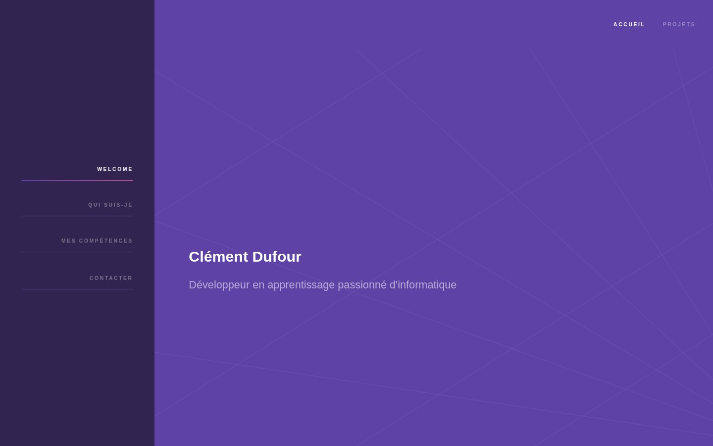

V1 · LES DÉBUTS
Mon premier portfolio
Créée au lycée à partir du thème Hyperspace de HTML5 UP, cette première version réunit une présentation, mes projets NSI, mes compétences et un formulaire de contact. Elle marque mes premiers pas dans la structure HTML, la mise en page CSS et la publication avec GitHub Pages.